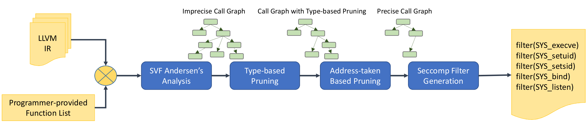

Please read our paper for more details on how temporal system call specialization works.

Please consider citing our paper if you found our tool set useful.
@inproceedings {temporal-ghavamnia,
author = {Seyedhamed Ghavamnia and Tapti Palit and Shachee Mishra and Michalis
Polychronakis},
title = {Temporal System Call Specialization for Attack Surface Reduction},
booktitle = {29th {USENIX} Security Symposium ({USENIX} Security 20)},
year = {2020},
isbn = {978-1-939133-17-5},
pages = {1749--1766},
url =
{https://www.usenix.org/conference/usenixsecurity20/presentation/ghavamnia},
publisher = {{USENIX} Association},
month = aug,
}